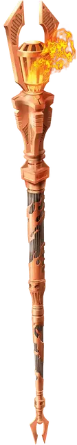

Посох огня
Staff of Fire
Посох, очень редкий (требуется настройка волшебником, друидом, колдуном или чародеем)

Рекомендованная стоимость 5 001-50 000 зм
Вы получаете сопротивление урону огнём, пока держите этот посох.
У этого посоха есть 10 зарядов. Держа его, вы можете действием потратить часть зарядов и наложить им одно из следующих заклинаний, используя свою Сл спасброска от заклинания: огненная стена [wall of fire] (4 заряда), огненные ладони [burning hands] (1 заряд) или огненный шар [fireball] (3 заряда).
Посох ежедневно восстанавливает 1к6 + 4 заряда на рассвете. Если вы истратили последний заряд, бросьте к20. Если выпадет «1», посох чернеет, разваливается на угли и уничтожается.